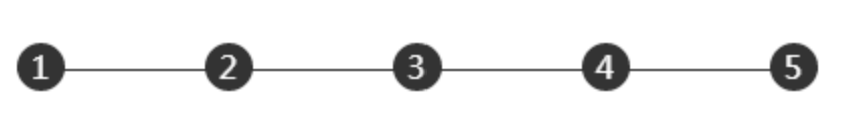

实现下列多列均匀布局

方法1 在外层使用text-align-last
当在外层使用text-align-last会导致内部text-align属性无法生效，
需要使用text-indent属性强行缩进
为什么不直接使用text-align:justify?
原因在于:justify属性
只有在存在第二行的时候才会生效，而这里我们只有一行，
因此使用text-align-last强行设置最后一行可以达成目标，
但是text-align-last兼容性较差，而text-align几乎可以兼容所有浏览器
同时
结合text-align两行即以上 生效的特性，我们可以选择给元素添加第二
行的方式达成目标
方法2 添加第二行
上例使用after伪元素，其display必须使用inline-block，
否则没有第二行的概念，也可以使用inline然后用内容去撑开，
这样就需要将内容隐藏，比较麻烦，也可以达到效果，如下
使用inline和文字还有一个坏处在于，文字长度无法改变
，如果显示框太长，之前设置的文字可能无法撑开导致换行。
方法3 最简单的flex布局